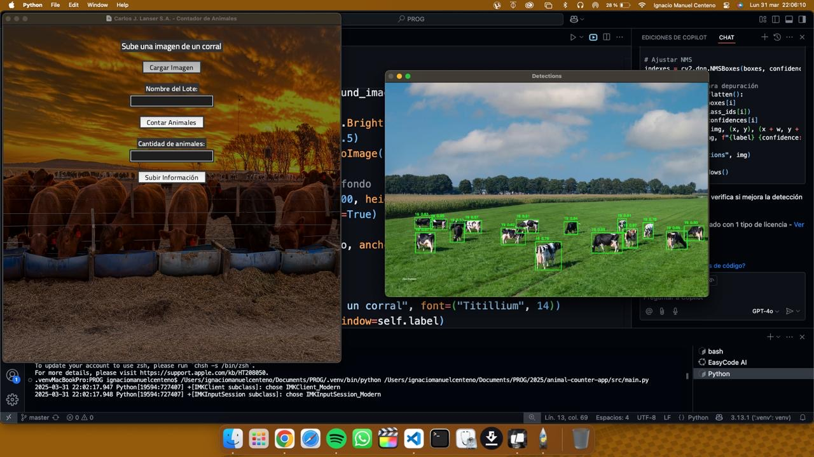
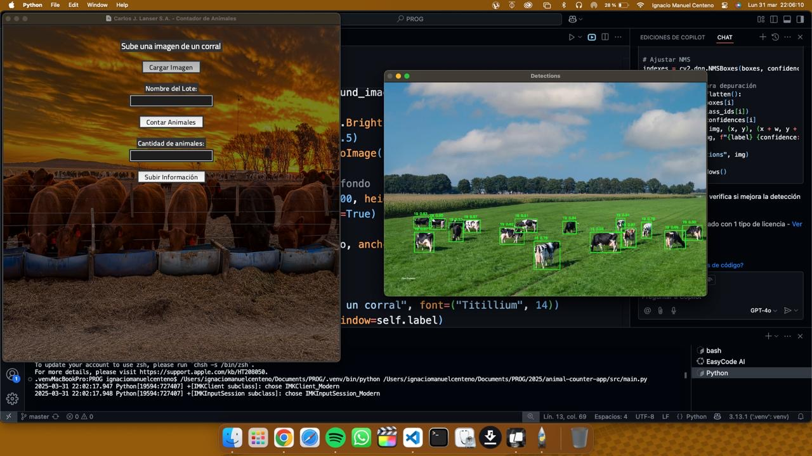
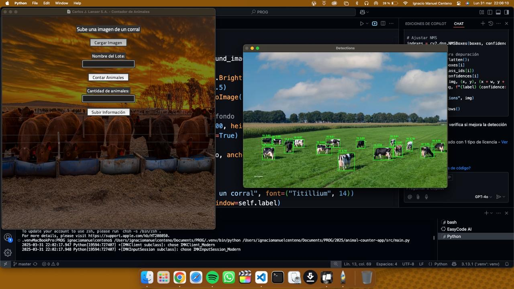

Mis Proyectos


 


Explorá mis trabajos y conocimientos en el mundo del desarrollo.
Apasionado del desarrollo con experiencia en diversas tecnologías. Acá podés ver algunos de mis proyectos y habilidades.
Mi nombre es Ignacio Centeno, pero me conocen como Igna. Soy un desarrollador multidisciplinario con un enfoque creativo y técnico. Me especializo en combinar programación, diseño de interfaces y producción audiovisual para crear experiencias inmersivas y automatizadas.
Desde el desarrollo de aplicaciones portables hasta la creación de visuales en vivo, mi objetivo es conectar la tecnología con el público de manera innovadora. Me apasiona resolver problemas complejos y crear soluciones que mejoren la interacción y la experiencia del usuario.
En este portfolio encontrarás una selección de mis proyectos más destacados, que abarcan desde aplicaciones inteligentes para el agro hasta visuales generativos para eventos en vivo. Cada proyecto refleja mi compromiso con la calidad, la creatividad y la funcionalidad.
Si estás interesado en colaborar o simplemente querés charlar sobre tecnología, no dudes en contactarme a través de mis redes sociales o por WhatsApp. Estoy siempre abierto a nuevas oportunidades y desafíos.
¡Gracias por visitar mi portfolio! Espero que disfrutes explorando mis trabajos tanto como yo disfruté creándolos.
¡Saludos!
Igna Centeno

🧠 Resumen de Conocimientos Generales
Desarrollador creativo y técnico multidisciplinario con experiencia en programación, diseño de interfaces, producción
audiovisual y soluciones para eventos en tiempo real.
Combino la programación con herramientas audiovisuales para crear experiencias inmersivas, automatizadas y
conectadas con el público.
Mis Redes Sociales